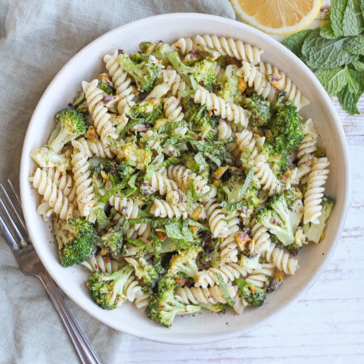

Roasted Broccoli Pasta with Lemon, Mint, Pistachios & Parmesan

Total Time
35 min
Nutrition (per serving)
646.1 kcalCalories
28.8 gProtein
72.9 gCarbs
28.6 gFat
Full nutrition table
| Calories | 646.1 kcal |
| Total fat | 28.6 g |
| Saturated fat | 7.5 g |
| Trans fat | 0.2 g |
| Cholesterol | 19.3 mg |
| Sodium | 65.6 mg |
| Carbohydrates | 72.9 g |
| Fiber | 9.4 g |
| Sugars | 7 g |
| Protein | 28.8 g |
| Potassium | 766.3 mg |
| Calcium | 134.6 mg |
| Iron | 5.6 mg |
| Vitamin A | 1337 IU |
| Vitamin C | 157.9 mg |
| Vitamin D | 5.4 IU |
Cookware
Ingredients
- 4 crownsbroccoli
- 1 small pkgfresh mint
- 1lemon
- 4 ozParmesan cheese
- ⅔ cuppistachios, unsalted
- 10 ozrotini pasta
- black pepper
- crushed red pepper
- extra virgin olive oil
- salt
Steps
- Preheat oven to 450°F.
- Wash and dry the fresh produce.4 crowns broccoli
1 lemon
1 small pkg fresh mint - Separate broccoli into bite-sized florets; cut stems into smaller pieces. Transfer to a large baking sheet pan, drizzle with oil, then season with salt and pepper. Toss to coat and spread out in an even layer.3 tbsp extra virgin olive oil
½ tsp salt
¼ tsp black pepper - Place baking sheet in the oven (it doesn't have to be fully heated) and roast until the broccoli is starting to soften, 6-7 minutes.
- While the broccoli is roasting, fill a large pot halfway with hot water (from the tap), cover, and bring to a boil over medium-high heat. Uncover, add salt and pasta, and stir for a few seconds. Cook until desired firmness, 8-10 minutes.1 tsp salt
10 oz rotini pasta - Meanwhile, roughly chop pistachios.⅔ cup pistachios, unsalted
- Once the broccoli has started to soften, remove from the oven. Sprinkle with pistachios, stir to combine, and spread out in an even layer.
- Return baking sheet to the oven. Continue to roast until broccoli is tender and lightly charred and pistachios are toasted, 10-12 minutes more. Remove from oven.
- Meanwhile, finely grate Parmesan and place in a small bowl.4 oz Parmesan cheese
- Zest and juice lemon into the bowl with the Parmesan.
- Pick mint leaves off the stems; discard stems and mince the leaves. Add half to the bowl along with the spices. (Reserve remaining mint for serving.)½ tsp salt
½ tsp black pepper
¼ tsp crushed red pepper - When the pasta is done, reserve ⅔-cup of cooking water, then drain. Return pasta and reserved cooking water to the pot.
- Add roasted broccoli, pistachios, and Parmesan mixture to the pot. Set the pot over medium-high heat and cook, stirring often, until liquid has evaporated and Parmesan is melted, 1-2 minutes. Remove from heat.
- To serve, divide pasta between plates or bowls and sprinkle with reserved mint. Enjoy!